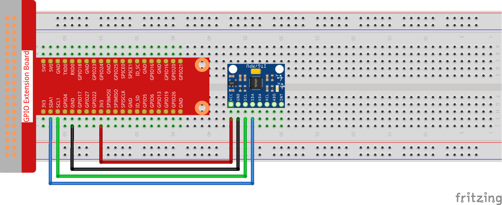

Nota
Ciao, benvenuto nella SunFounder Raspberry Pi & Arduino & ESP32 Enthusiasts Community su Facebook! Unisciti a noi per approfondire Raspberry Pi, Arduino e ESP32 insieme ad altri appassionati.
Perché unirsi a noi?
Supporto esperto: Risolvi problemi post-vendita e sfide tecniche con l’aiuto della nostra community e del nostro team.
Impara e condividi: Scambia suggerimenti e tutorial per migliorare le tue competenze.
Anteprime esclusive: Accedi in anticipo agli annunci di nuovi prodotti e anteprime.
Sconti speciali: Approfitta di sconti esclusivi sui nostri prodotti più recenti.
Promozioni e omaggi festivi: Partecipa a omaggi e promozioni per le festività.
👉 Pronto a esplorare e creare con noi? Clicca su [Qui] e unisciti oggi stesso!
2.2.6 Modulo MPU6050
Introduzione
L’MPU-6050 è il primo e unico dispositivo al mondo per il rilevamento del movimento a 6 assi (3 assi per giroscopio e 3 assi per accelerometro) progettato per smartphone, tablet e sensori indossabili. È dotato di caratteristiche che includono bassi consumi energetici, bassi costi e elevate prestazioni.
In questo esperimento, utilizziamo I2C per ottenere i valori del sensore di accelerazione a tre assi e del giroscopio a tre assi del modulo MPU6050 e li mostriamo sullo schermo.
Componenti

Schema Elettrico
L’MPU6050 comunica con il microcontrollore attraverso l’interfaccia bus I2C. SDA1 e SCL1 devono essere collegati ai rispettivi pin.

Procedura Sperimentale
Passo 1: Monta il circuito.
Passo 2: Configura I2C (consulta l’Appendice Configurazione I2C. Se hai già configurato I2C, salta questo passo.)
Passo 2: Vai alla cartella del codice.
cd ~/davinci-kit-for-raspberry-pi/nodejs/
Passo 3: Installa le dipendenze.
sudo npm install mpu6050-gyro
Passo 4: Esegui il codice.
sudo node mpu6050_module.js
Quando il codice è in esecuzione, l’angolo di inclinazione sugli assi x e y e l’accelerazione e velocità angolare su ciascun asse rilevati da MPU6050 verranno calcolati e stampati sullo schermo.
Codice
var gyro = require("mpu6050-gyro");
var address = 0x68; //MPU6050 address
var bus = 1; //i2c bus used
var gyro = new gyro( bus,address );
async function update_telemetry() {
var gyro_xyz = gyro.get_gyro_xyz();
var accel_xyz = gyro.get_accel_xyz();
var gyro_data = {
gyro_xyz: gyro_xyz,
accel_xyz: accel_xyz,
rollpitch: gyro.get_roll_pitch( gyro_xyz, accel_xyz )
}
console.log(gyro_data);
setTimeout(update_telemetry, 500);
}
if ( gyro ) {
update_telemetry();
}
Spiegazione del Codice
var gyro = require("mpu6050-gyro");
var address = 0x68; // Indirizzo MPU6050
var bus = 1; // Bus i2c utilizzato
var gyro = new gyro(bus, address);
Importa il modulo mpu6050-gyro, definisci l’indirizzo di MPU6050 e
crea un oggetto gyro per richiamare le funzioni incapsulate nel modulo.
Nota
Per maggiori dettagli sul modulo, consulta: https://www.npmjs.com/package/mpu6050-gyro
var gyro_xyz = gyro.get_gyro_xyz();
var accel_xyz = gyro.get_accel_xyz();
var gyro_data = {
gyro_xyz: gyro_xyz,
accel_xyz: accel_xyz,
rollpitch: gyro.get_roll_pitch( gyro_xyz, accel_xyz )
}
console.log(gyro_data);
setTimeout(update_telemetry, 500);
Il modulo incapsula tre funzioni disponibili:
gyro.get_gyro_xyz(): Ritorna un oggetto JSON con i dati x, y, z grezzi del giroscopio.
gyro.get_accel_xyz(): Ritorna un oggetto JSON con i dati x, y, z grezzi dell’accelerometro.
gyro.get_roll_pitch(gyro_xyz, accel_xyz): Ritorna un oggetto JSON con i valori di rollio e beccheggio in gradi.
Immagine del Fenomeno